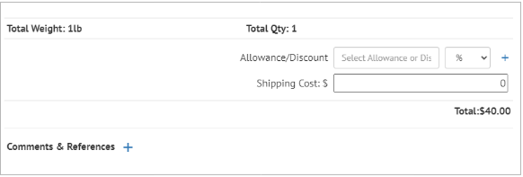
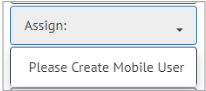

6. Orders¶
The Orders page in Cibos is separated into three essential groupings: Orders, Manufacturing Orders, and Fulfillment Status. Manufacturing Orders are separated from the other Order types because of a different workflow. Order types include Sales Order, Purchase Order, Credit Memo, Trade & Marketing Expense, and Lab Order. Manufacturing Orders are further separated into five stages to track Manufacturing Orders as they move through the stages of Open, Prepping, Processing, Storage, and Packaged. Fulfillment Status is used for tracking orders that are Shipped, Received, Invoiced/Billed, or Paid.

6.1. Orders¶
Order types include Sales Order, Purchase Order, Credit Memo, Trade & Marketing Expense, and Lab Order. Use the Search function to narrow down a long list of Orders using Order # or Vendor and find a specific Order. On the Orders header, you can also quickly see how many Orders are on your list. Filter Orders by Supplier, Buyer, Open, and Sent by clicking the Filter icon.

How to Add a New Order
Click the Plus icon on the Orders header to add a new Order to your Orders list.

A New Order Type form will appear. Select the appropriate order type: Sales Order, Purchase Order, Credit Memo, Trade & Marketing Expense, and Lab Order. Then click Next.

6.2. Sales Order¶
The menu on the right-hand side of the Add Order form allows you to navigate to different pages of the Order form, while the page content is situated on the left-hand side.
Order
Start on the Order page, where you can add the following information:
Buyer – enter the Buyer Name, StoreID, or Store#. The dropdown menu is populated from your Vendors and Store lists

Ship To – select the Ship to address is different from buyer address as needed, then enter the shipping address in the Ship To field

Ship From – enter the Manufacturer/Supplier Name, StoreID, or Store#. The dropdown menu is populated from your Manufacturers and Suppliers lists.
Requested Dates – set the requested Ship By and Deliver By dates using the pop-out calendar or entering them manually.

Term – Select the Term from 15, 30, or Prepaid
Items – Add Packages by clicking the Plus icon based on the selected Buyer. The Cost/UOM will auto-populate, and you can set the desired quantity (QTY). The Total cost for a Package is also listed. Click the green check to save the Item.

Once an Item is added, the Order page expands to include a new section displaying the Order’s Total Weight and Total Qty.
If you’d like to add an Allowance/Discount, choose from the following options: Discount, Freight Allowance, Marketing Allowance, or Spoils Allowance. Then set it as either a % or $ Allowance/Discount and click the Plus icon to add.
You can also set the Shipping Cost.

Finally, add Comments & References by choosing a subject, General, External Order Number, or Link and writing a comment in the text box. Then click Save.

Assign
Before you can Assign a User, a Mobile Work Order User must be added from the Collaboration page. Then click Assign in the menu and select the preferred User from the drop-down menu

Contacts
The Contacts page displays a list of Contacts pulled from your CRM records based on the Buyer and Manufacturer/Supplier picked on the Order page. This is a quick and efficient way to know who to contact concerning specific orders.
Logistics
The Logistics page lists any Customers & Suppliers from the CRM that are denoted as the Logistics type. You can instantly view the Vendor Name, Rate, Email, and Phone Number.
Click the checkbox to select the preferred Vendor, and a set of new options appears. Now you can add the following Logistics information:
Logistics Cost
Total Weight
Handling Unit Type
Total Handling Units
NMFC Designation
Delivery Notes
Note
When the Logistics information is completed, you can click the Download or Send buttons under the Action heading.
Send
You can Send a copy of the Order to the Buyer and/or Manufacturer/Supplier from the Send page.
Download
From the menu, click the Printer icon to Download a copy of the Sales Order as a PDF file. Click the Document icon to Download a copy of the Sales Order as an edi file.
Batch Numbers
Add Batch Numbers by selecting Items from the drop-down menu. Then click Add.

Adjust Qty Picked/Pack and click the green checkmark to Save the selected Item.

Status
Set the Sales Order Status by clicking Status in the menu and selecting one of the options in the drop-down menu: Open, Shipped, Received, Invoiced, Billed, Completed, and Paid. This also moves Orders into the different Fulfillment Status categories.

Archive
Once a Sales Order Status has been set to Paid, hover over the Order and click the Edit button.
Under Status, find and click Archive. Click OK to confirm you wish to Archive this Order.

You have now finished editing an Order through its full lifecycle from Open to Paid and finally Archived.